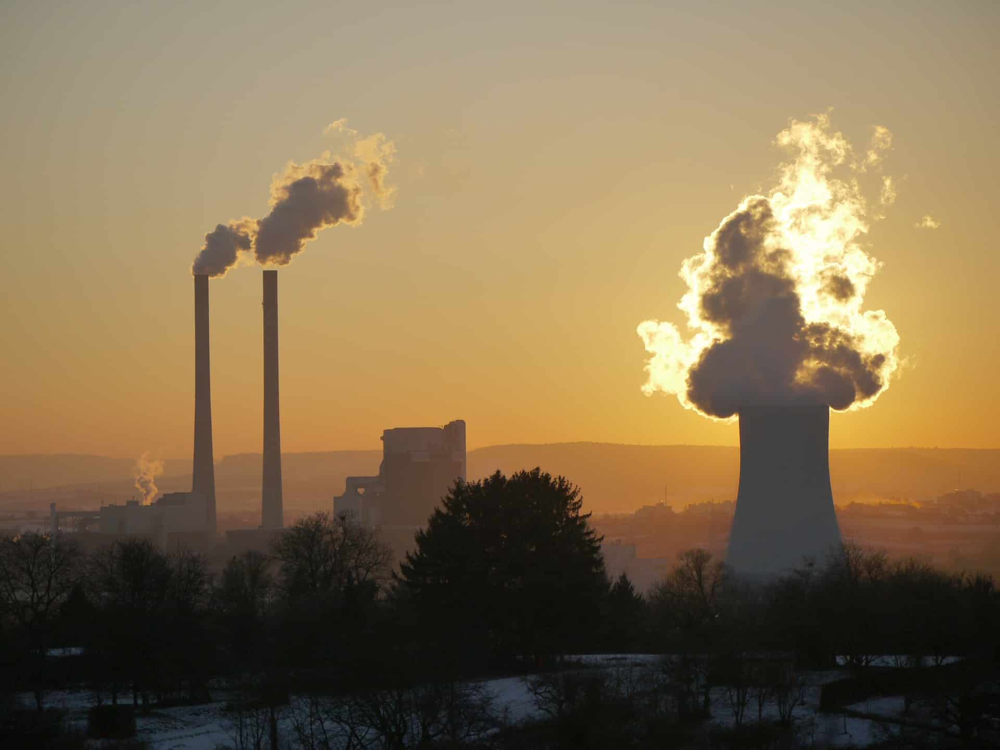
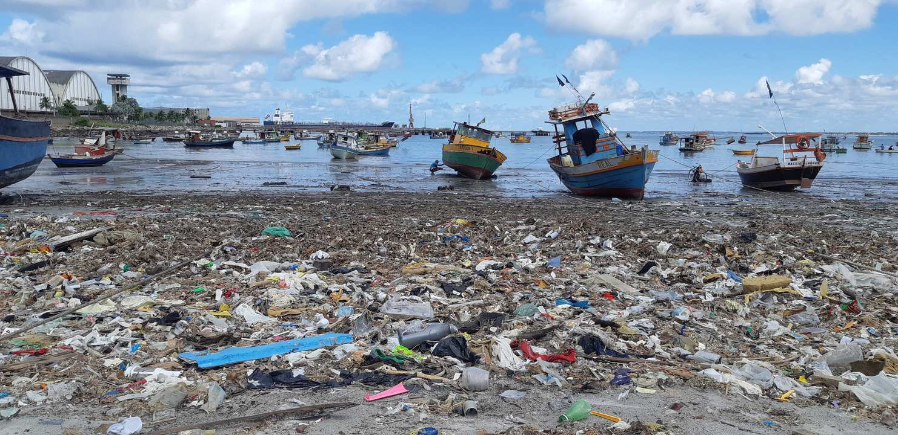

Desmatamento
Desmatamento é a destruição da vegetação por atividades humanas, com sérios danos ao meio ambiente.
Saiba mais

Poluição do Ar
A poluição do ar é a emissão de substâncias nocivas na atmosfera, causada principalmente por atividades humanas, que prejudica a saúde e o meio ambiente.
Saiba mais

Poluição da Água
A poluição da água é a contaminação dos corpos d’água por substâncias nocivas que alteram sua qualidade e prejudicam a saúde e o meio ambiente.
Saiba mais
Queimadas
Queimadas são fenômenos naturais ou provocados pelo homem que causam a destruição da vegetação, a poluição do ar e o desequilíbrio ecológico.
Saiba mais